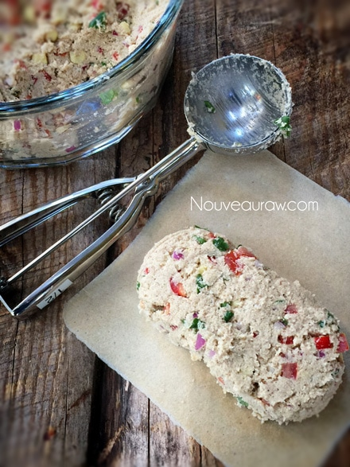
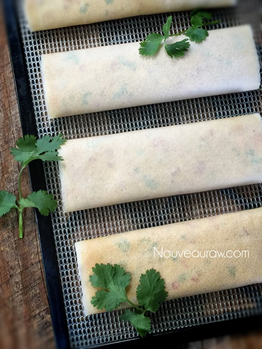
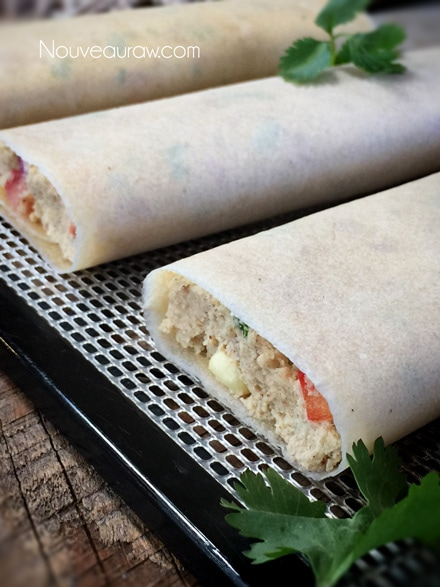
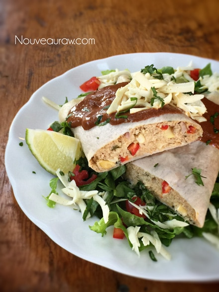

Fresh Veggie Enchiladas
~ raw, vegan, gluten-free, nut-free ~
According to Buddhist teachings; all pain comes from the expectations… this recipe started off with the grand intentions of becoming a raw tamale. I have wanted to create one for quite some time. When thumbing through my notebook (where I scratch down my recipe ideas), I stumbled upon an old “recipe” that I had in the works for tamales.
Blowing the dust off of the recipe, did some tweaking and set forth with the notion of creating raw tamales. By now, you know that I have a great love for Mexican food… but tamales and I had a rough start. I was around 15 years old when I had my first one. Mom, Dad and I were in Anchorage, and my dad said that he was taking us to a neat little Mexican place that had the “best tamales.”
I could hardly wait to try them! We got our tamales, sat down and dug in. I took a bite… yuck. It was awful. I looked at my dad who was beaming from ear to ear, nodding his head and winking as if to say, “Told ya! Best ever!” I tried another bite, but the taste didn’t change. I pushed my food around on my plate and called it done. I didn’t want to tell my dad that I didn’t like it because clearly, he was in heaven.
So, for… oooh about twenty years I let go of the notion that I loved ALL Mexican food and never had another tamale. Then one day, my husband took me out to eat at a wonderful place in Tucson. He said they had the best tamales. (I groaned inwardly) I didn’t order any; I just told Bob that I would have a bite of his. I watched as he started to fiddle around with the tamale, looking as if he were unwrapping it? I watched with curiosity. His fork melted into the creamy white texture, and he took a bite. His eyes said it all. I asked why he unwrapped it and what that was all about. He explained how they cook them in husks but are not meant to be eaten. Doh! No wonder I didn’t like it back when I was a young’n. I thought you were supposed to eat the husk. I pushed my plate aside and finished off his tamale. hehe
So… with this recipe, I wanted to create the ultimate raw tamale. I made the filling, wrapped it up, and put it in the dehydrator. After warming for about 4 hours, I grabbed Bob by the hand and led him to the dehydrator. I was so excited to show him. I slid the tray out, and Bob reached in… he took a bite. “Oh, that’s good!” I was beaming… “What do you think of my raw tamale?!!!” (I was doing cartwheels inside) he looked at me and said, “It doesn’t taste like a tamale, it takes like an enchilada!” He then proceeded to eat the whole thing, muttering in between bites how good it was. lol
At first, my heart sank… drat, I thought I was on to something here… but then, I quickly let go of the tamale notion and got excited with my new raw enchilada. Hehe, I hope that you enjoy this recipe. Blessings, amie sue
Filling = 4 cups ( 4 1/2 enchiladas = 1 cup batter each)
- 1 cup tiger nut flour
- 1/4 cup psyllium powder
- 1/2 tsp Himalayan pink salt
- 1 tsp nutritional yeast
- 1/4 tsp ground cumin
- 3 3/4 cup organic corn
- 1/4 cup water
- 2 Tbsp lime juice
- 1 tsp raw agave nectar
- 1 clove garlic
Add in’s:
- 1 medium tomato, seeded and minced
- 1/3 cup minced red pepper
- 1/2 cup minced fresh cilantro
- 1/4 cup minced red onion
Coconut wraps:
- 2 cups young Thai coconut meat
- 1 1/2 cups coconut water
- 1/4 tsp Himalayan pink salt
- OR use store-bought raw coconut wraps (here)
Preparation:
Filling:
- In the food processor, fitted with the “S” blade, combine the tiger nut flour, psyllium, salt, nutritional yeast, and cumin. Pulse together, making sure all the dry ingredients are well mixed. Set aside.
- I used tiger nut flour to make this recipe nut and seed free. You can use other flours, just keep it in mind that it will change the texture and flavor a tad bit.
- Psyllium gives the enchiladas a wonderful mouth-feel texture. I don’t recommend skipping it or substituting it out.
- In the blender, combine the corn, water, lime juice, agave (or any liquid sweetener), and garlic. Blend until smooth and creamy. Pour into the food processor and process until everything is well mixed.
- Be sure to use organic corn, which will be Non-GMO.
- You can use either fresh or frozen corn, if frozen allow it to thaw before using.
- You can omit the agave if your dietary restrictions call for it but it’s a very small amount in a huge amount of batter. I added it to bump up the sweetness and flavor of the corn.
- Place the batter in a large bowl and add the tomato, red pepper, cilantro, and onion. Mix well.
Coconut wraps:
- You can purchase raw coconut wraps (here) if you are short on time or resources.
- To make homemade wraps: Place the coconut meat, water, and salt in the blender. Blend until creamy smooth; you don’t want it lumpy or gritty.
- Pour the batter onto the non-stick sheet that comes with the dehydrator. Spread it evenly across the sheet into one large square. You will cut it into quarters after it has dried.
- Dry at 115 degrees (F) for roughly 4 hours or until it is dry enough to peel off. Flip over onto the mesh sheet and dry for about 1 hour or until it isn’t tacky to touch.
- Store in a large zip-lock bag, placing parchment paper in between each piece.
Assembly & dehydration:
- Lay a coconut wrap on the countertop, place 1/2 – 1 cup of the filling on one end of the wrap.
- I used 1 cup in the photos which made 6 (1 cup) enchiladas and 1 (1/2 cup) enchiladas.
- Fold the wrap over and roll into a tube.
- Gently flatten, pressing the filling towards the edges.
- Place the enchiladas on the mesh sheet that comes with the dehydrator.
- Dry at 145 degrees (F) for 1 hour, then reduce to 115 degrees (F) for 4-6 hours.
- The dry time develops a deeper flavor and cooked appearance.
- If you don’t have a dehydrator, you can eat them as is. I find the drying process develops a deeper and richer flavor. You can also warm them on your stove, just be careful that you don’t get them too hot. Use your fingertips as a temp gauge or use a real thermometer to monitor it.
- Enjoy warm with your favorite condiments! Tastes great topped with my Sun-Dried Tomato Enchilada Sauce.
- Store leftovers in the fridge for 5-7 days. OR wrap in freezer paper, slide into a freezer-safe ziplock bag and freeze for a month.
The Institute of Culinary Ingredients™
- If you are new to using Nutritional Yeast, click (here).
- What is Himalayan pink salt and does it really matter? Click (here) to read more about it.
- What is miso? Click (here) to learn more about it.
Culinary Explanations:
- Why do I start the dehydrator at 145 degrees (F)? Click (here) to learn the reason behind this.
- When working with fresh ingredients it is important to taste test as you build a recipe. Learn why (here).
- Don’t own a dehydrator? Learn how to use your oven (here). I do however truly believe that it is a worthwhile investment. Click (here) to learn what I use.




© AmieSue.com